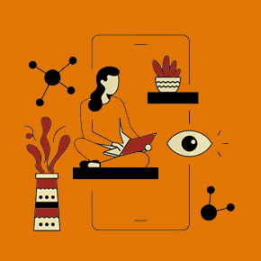
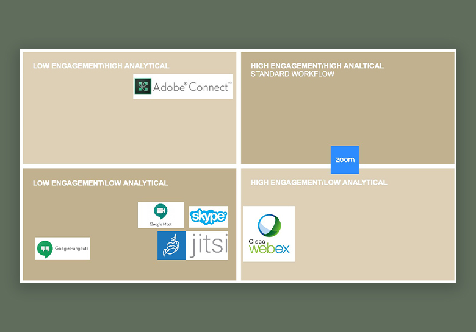
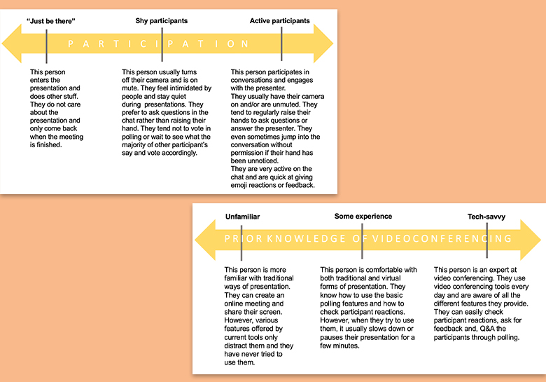
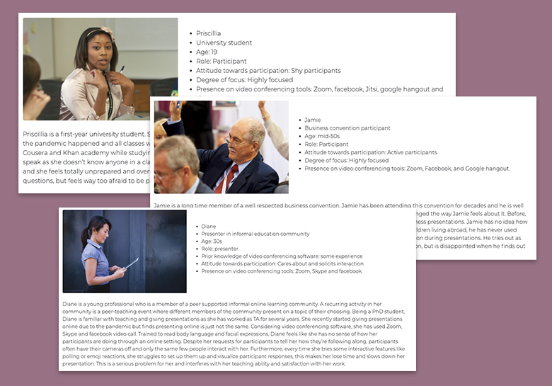

UX Research case study - 2020
Usability testing with Steam Website

Despite that Steam has the highest number of active users and
has been leading the game industry, its website is poorly
designed. Users often feel disorientated when finding
information on the website, since the information on the website
is not properly organized, and too many visuals are randomly
displayed. Therefore, by conducting usability testings, our team
decided to evaluate the website's usability and find out better
ways to organize information and provide a more intuitive and
tailored experience to users.
My role
UX researcher
Tools
Figma, Adobe XD, Heurio, Miro, Slack and Zoom
Plan
Target user group
This usability testing target population is the younger
generation who are currently between 18-39 years old and own a
personal computer to enjoy gaming. According to the sales,
demographic and usage data of 2018 from the Entertainment
Software Association, the average gamer is 34 years old. Based
on the same source of data, the main device to play a game is a
personal computer (41%), followed by smartphone (36%) and
dedicated game console (36%). Based on the target user group, I
built two personas for this project.

Usability evaluation plan
While many software had features that engage participants, no
software provided any features for participants to react and
engage in a presentation without garnering overwhelming
attention and/or being disrupting, while still being easily
visible to the presenter.
Via our proposed system, presenters will be able to interpret
participant engagement with ease through our proposed real time
visualization and aggregation of participant’s reactions and
responses This eliminates the need for presenters to switch to
different tabs or change the view mode to engage more
comfortably with participants.
Assess
Cognitive Walkthrough and Heuristic Evaluation
Before we conduct usability testings with users, we have two
usability evaluation sessions: heuristic evaluation and cognitive
walkthrough. Each team member, including myself, conducted
After several sessions, we settled on a single column interface
which doesn’t incorporate video conferencing tools. We wanted our
system to be used by anyone, no matter their choice of
video-conferencing platform. From that, we generated many ideas
about the style and format of the interface, namely where key
features like raising hand or emoting would go.
Design for
Everyone
is
Design for
No One
Remote usability testing
Based on findings from participants observation, we defined the
mental model for "having an online class on video conferencing
tools" to select groups of people whom we want to focus on to
provide a tailored experience to users.
We listed distinguishing tasks and grouped them where there is
behavior affinity. At this stage, we defined actors, named the
groups (actors) and wrote an description.
We listed distinguishing tasks and grouped them where there is
behavior affinity. At this stage, we defined actors, named the
groups (actors) and wrote an description.


Interview
Based on the task-based audience segments, we defined three
personas.
In order to keep it manageable within the allotted time frame,
we selected core groups to focus for this project.
For presenters, we decided to target those with low and medium
prior knowledge of video-conferencing tools , as well as those
who look forhigh participation from their audience. For
participants, we targeted both shy and active participants that
are focused on the presentation.
It wasn't easy to make some design decisions!
We loved all our designs and wanted to have all the features.
However, we had to make some decistoins to get the design right! We
bounced our ideas off each other with sketches and conducted the
usability testing with our paper prototypes!
Develop
..and there are more tasks to be done!
We are currently designing high-fidelity prototypes and will conduct
more usability testings with or without users (cognitive walkthrough
and heuristic evaluation ). We will also run the heuristic
evaluation! After the design finalization, we are going to implement
this feature and launch it!
🚧 This project is currently in progress 🚧